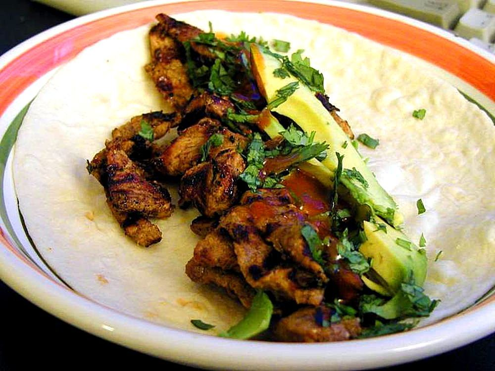

Carne Asada Tacos

Description
On this page you will learn to make one of the richest and most flavourful meat tacos. Packed with flavour and punch, this moreish dish will have you wanting to travel to Mexico Immediately.
Ingredients
- Carne Asada
- Avocado
- Onion
- Lime
- Cilantro
- Cheese
- Tortillas
Method
- Grill your steak
- Slather a tortilla with avocado that has been roughly mashed.
- Then, add a good helping of chopped carne asada, a sprinkle of cotija or queso fresco cheese, chopped onion and fresh cilantro. Squeeze some fresh lime on top and there you have it – perfect carne asada tacos!
Recipe from: Downshiftology
Back to home